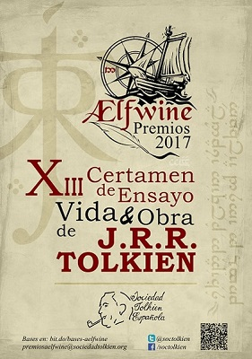
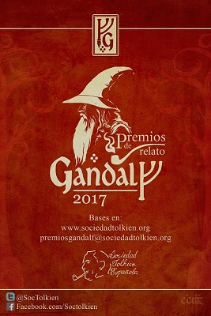
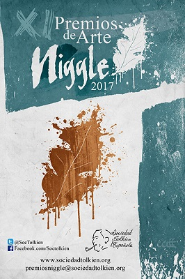

La Mereth Aderthad Concursos y Premios
La STE organiza anualmente varios certámenes literarios, artísticos y académicos. La entrega de premios tendrá lugar durante la ceremonia de clausura de la convención, el día 15 de octubre por la mañana.
- Premio de ensayo Ælfwine 2017: Certamen que premia estudios y trabajos sobre vida u obra de J.R.R. Tolkien. ¡Participa hasta el 17 de septiembre!
- Premio de relato Gandalf 2017: El certamen más longevo con esta su XXII convocatoria. Relatos ambientados en las obras de J.R.R. Tolkien. ¡Participa hasta el 30 de agosto!
- Premio de artesanía Niggle 2017: Certamen centrado en las artes plásticas inspiradas en cualquiera de las obras de J.R.R. Tolkien. ¡Participa hasta el 10 de septiembre!
- Premio de microrrelato Bilbo 2017: El certamen más breve, microrrelatos en 140 caracteres. Leer las bases
 
 
La participación en todos los certámenes se encuentra abierta a todo el mundo. ¡A qué estáis esperando!